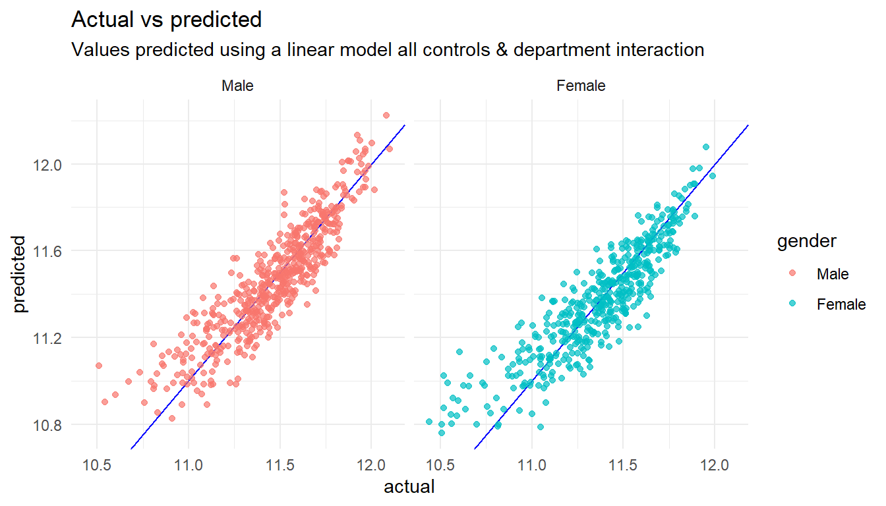
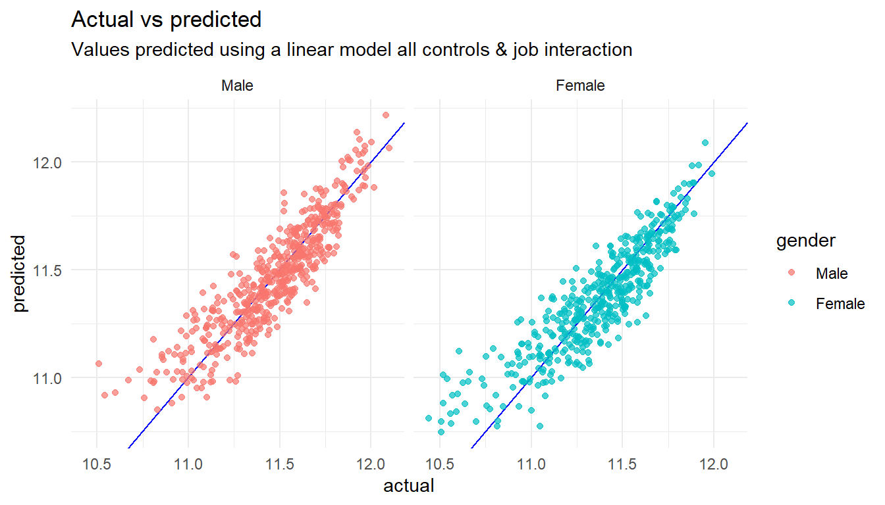

Chapter 13 Gender Pay Gap
According to a recent Glassdoor survey, more than two-thirds (67 percent) of U.S. employees say they would not apply for jobs at employers where they believe a gender pay gap exists.1 Today, the gender pay gap is more than a social or legal issue. It’s an issue that can affect the ability of employers to attract and retain talent.
How should HR practitioners react to concerns about the gender pay gap? One increasingly popular way is to perform an internal gender pay audit to understand whether a gap exists at your company. This involves examining your own payroll data for evidence of a gender pay gap, and making recommendations to senior management about ways to lower gender barriers in recruitment, hiring, pay and promotion before they arise as broader organizational concerns.
The following example appeared on the Glassdor website in March 2017, with the title “How to Audit Your Gender Pay Gap: An Employers Guide Using R” and was written by Andrew Chamberlain, Ph.D.
# Load R libraries.
library(tidyverse)
library(tidymodels)
library(devtools)
library(HRAnalytics) # Helper package
#Turn off scientific notation.
options(scipen = 999)# Load data.
gd_data = read_csv("https://glassdoor.box.com/shared/static/beukjzgrsu35fqe59f7502hruribd5tt.csv")Parsed with column specification:
cols(
jobTitle = col_character(),
gender = col_character(),
age = col_double(),
perfEval = col_double(),
edu = col_character(),
dept = col_character(),
seniority = col_double(),
basePay = col_double(),
bonus = col_double()
)13.1 Data Cleaning and Prep.
Before we can analyse whether we have gender pay gap, we need to prepare our data so it is cleaned up and has useful columns we can analyse.
We will perform the following steps in our process:
- Make a number of sensible age brackets e.g. <25, 25-34, 35-44, 45-54, >54
- Create total compensation variable (base pay + bonus)
- Take natural logarithm of compensation variables (for percentage pay gap interpretation in regressions).
- Convert values like department into values that can act as flags in our model and making the most commonly occuring value the default which everything else gets compared to in our model.
gd_data %>%
# Age brackets
mutate(age_bin = cut(age,
breaks = c(0, 25, 35, 45, 55, Inf),
right = FALSE)) %>%
# Total compensation
mutate(total_pay = basePay + bonus) %>%
# Log of compensation
mutate(log_base = log(basePay, base = exp(1)),
log_total = log(total_pay, base = exp(1)),
# Adds 1 to allow for log of 0 bonus values.
log_bonus = log(bonus + 1, base = exp(1))) %>%
# Make flags
mutate_if(is_character, fct_infreq) %>%
mutate(age_bin = fct_infreq(age_bin)) ->
gd_data_clean13.2 Summary Statistics by gender
We can look at summary statistics by gender.
# Base pay summary stats.
gd_data_clean %>%
# Exclude stuff with missing info
filter(!is.na(basePay)) %>%
# Analyse by gender
group_by(gender) %>%
# Retrieve summary statistics
summarise(
mean_base = mean(basePay),
median_base = median(basePay),
count = n()
) ->
gd_summary_gender_base
gd_summary_gender_base# A tibble: 2 x 4
gender mean_base median_base count
<fct> <dbl> <dbl> <int>
1 Male 98457.5 98223 532
2 Female 89942.8 89913.5 468# Total pay summary stats.
gd_data_clean %>%
# Use a helper function to save typing
HRAnalytics::gap_summary(gender, total_pay) ->
gd_summary_gender_total
gd_summary_gender_total# A tibble: 2 x 4
gender mean median count
<fct> <dbl> <dbl> <int>
1 Male 104919. 105100. 532
2 Female 96416.8 96571 468# Bonus summary stats.
gd_data_clean %>%
# Use a helper function to save typing
HRAnalytics::gap_summary(gender, bonus) ->
gd_summary_gender_bonus
gd_summary_gender_bonus# A tibble: 2 x 4
gender mean median count
<fct> <dbl> <dbl> <int>
1 Male 6461.13 6480.5 532
2 Female 6474.01 6553 468# Performance evaluations summary stats.
gd_data_clean %>%
# Use a helper function to save typing
HRAnalytics::gap_summary(gender, perfEval) ->
gd_summary_gender_perf
gd_summary_gender_perf# A tibble: 2 x 4
gender mean median count
<fct> <dbl> <dbl> <int>
1 Male 3.12594 3 532
2 Female 2.93590 3 46813.3 Avoiding Simpson’s Paradox
Simspson’s Paradox is where some high level aggregations lead to a different conclusion than would have been arrived at if a lower level of detail had been looked at. We should check out values split by department and job title to see if they showcase wage differences.
# Performance evaluations summary stats.
gd_data_clean %>%
filter(!is.na(total_pay)) %>%
# Create a summary by department and gender
group_by(dept, gender) %>%
summarise(
mean_perf = mean(total_pay),
median_perf = median(total_pay),
count = n()
) %>%
# "Unpivot" the data
gather(measure, value, mean_perf:count) %>%
# Combine the gender with measure
unite(combo, measure, gender) %>%
# "Pivot" the data to see all the measures split by gender
spread(combo, value) ->
gd_summary_dept_gender_total
gd_summary_dept_gender_total# A tibble: 5 x 7
# Groups: dept [5]
dept count_Female count_Male mean_perf_Female mean_perf_Male median_perf_Fem~
<fct> <dbl> <dbl> <dbl> <dbl> <dbl>
1 Oper~ 96 114 93098.5 99214.7 93236.5
2 Sales 101 106 99222.3 108388. 99069
3 Mana~ 87 111 99172.1 106201. 96329
4 Admi~ 95 98 93429.2 102680. 94481
5 Engi~ 89 103 97308.1 108408. 97867
# ... with 1 more variable: median_perf_Male <dbl># Performance evaluations summary stats.
gd_data_clean %>%
filter(!is.na(total_pay)) %>%
# Create a summary by job and gender
group_by(jobTitle, gender) %>%
summarise(
mean_perf = mean(total_pay),
median_perf = median(total_pay),
count = n()
) %>%
# "Unpivot" the data
gather(measure, value, mean_perf:count) %>%
# Combine the gender with measure
unite(combo, measure, gender) %>%
# "Pivot" the data to see all the measures split by gender
spread(combo, value) ->
gd_summary_job_gender_total
gd_summary_job_gender_total# A tibble: 10 x 7
# Groups: jobTitle [10]
jobTitle count_Female count_Male mean_perf_Female mean_perf_Male
<fct> <dbl> <dbl> <dbl> <dbl>
1 Marketi~ 107 11 82251.1 88161.6
2 Softwar~ 8 101 101147. 113034.
3 Data Sc~ 53 54 102452. 95450
4 Financi~ 49 58 101744. 101116.
5 Graphic~ 48 50 98810.4 96584.1
6 IT 50 46 96837.9 97239.6
7 Sales A~ 43 51 98220.5 100894.
8 Driver 46 45 93197.3 98417.8
9 Manager 18 72 133244. 130929.
10 Warehou~ 46 44 100084. 93363.6
# ... with 2 more variables: median_perf_Female <dbl>, median_perf_Male <dbl>13.4 Model Estimation: OLS with controls.
Coefficient on “male” has the interpretation of approximate male pay advantage (“gender pay gap”).
13.4.1 Logarithm of Base Pay
# No controls. ("unadjusted" pay gap.)
lm_gender <- lm(log_base ~ gender, data = gd_data_clean)
# Adding "human capital" controls (performance evals, age and education).
lm_humancapital <- lm(log_base ~ gender + perfEval + age_bin + edu, data = gd_data_clean)
# Adding all controls. ("adjusted" pay gap.)
lm_allcontrols <- lm(log_base ~ gender + perfEval + age_bin + edu + dept + seniority + jobTitle, data = gd_data_clean)
Call:
lm(formula = log_base ~ gender, data = gd_data_clean)
Residuals:
Min 1Q Median 3Q Max
-0.9529 -0.1610 0.0356 0.2080 0.6374
Coefficients:
Estimate Std. Error t value Pr(>|t|)
(Intercept) 11.4618 0.0123 933.21 < 0.0000000000000002 ***
genderFemale -0.0953 0.0180 -5.31 0.00000014 ***
---
Signif. codes: 0 '***' 0.001 '**' 0.01 '*' 0.05 '.' 0.1 ' ' 1
Residual standard error: 0.283 on 998 degrees of freedom
Multiple R-squared: 0.0275, Adjusted R-squared: 0.0265
F-statistic: 28.2 on 1 and 998 DF, p-value: 0.000000136lm_gender %>%
# Get the predicted values
augment() %>%
# Rename columns to more friendly names
rename(actual = log_base, predicted = .fitted) %>%
# Build a chart
ggplot() +
# Add columns to it
aes(x=actual, y=predicted) +
# Choose chart type
geom_point() +
# Add a diagonal line representing perfect predictions
geom_abline(colour="blue", slope=1, intercept=0)+
# Split by gender
facet_wrap(~gender) +
# Add some labels
labs(title="Actual vs predicted",
subtitle="Values predicted using a linear model containing gender")
Call:
lm(formula = log_base ~ gender + perfEval + age_bin + edu, data = gd_data_clean)
Residuals:
Min 1Q Median 3Q Max
-0.7985 -0.1384 0.0216 0.1550 0.5663
Coefficients:
Estimate Std. Error t value Pr(>|t|)
(Intercept) 11.62854 0.02500 465.06 < 0.0000000000000002 ***
genderFemale -0.10019 0.01472 -6.81 0.000000000017 ***
perfEval -0.00696 0.00516 -1.35 0.178
age_bin[25,35) -0.35168 0.02191 -16.05 < 0.0000000000000002 ***
age_bin[45,55) -0.11506 0.02206 -5.21 0.000000223886 ***
age_bin[35,45) -0.19201 0.02238 -8.58 < 0.0000000000000002 ***
age_bin[0,25) -0.43181 0.02307 -18.72 < 0.0000000000000002 ***
eduMasters 0.08767 0.02029 4.32 0.000017159218 ***
eduCollege 0.03757 0.02056 1.83 0.068 .
eduPhD 0.11096 0.02072 5.35 0.000000106653 ***
---
Signif. codes: 0 '***' 0.001 '**' 0.01 '*' 0.05 '.' 0.1 ' ' 1
Residual standard error: 0.231 on 990 degrees of freedom
Multiple R-squared: 0.361, Adjusted R-squared: 0.355
F-statistic: 62.2 on 9 and 990 DF, p-value: <0.0000000000000002lm_humancapital %>%
# Get the predicted values
augment() %>%
# Rename columns to more friendly names
rename(actual = log_base, predicted = .fitted) %>%
HRAnalytics::pred_vs_actuals() +
# Add some labels
labs(title="Actual vs predicted",
subtitle="Values predicted using a linear model containing human capital measures")
Call:
lm(formula = log_base ~ gender + perfEval + age_bin + edu + dept +
seniority + jobTitle, data = gd_data_clean)
Residuals:
Min 1Q Median 3Q Max
-0.5679 -0.0824 0.0099 0.0865 0.3378
Coefficients:
Estimate Std. Error t value Pr(>|t|)
(Intercept) 11.006946 0.022887 480.93 < 0.0000000000000002
genderFemale -0.010945 0.009246 -1.18 0.2368
perfEval 0.000107 0.002948 0.04 0.9709
age_bin[25,35) -0.336882 0.012492 -26.97 < 0.0000000000000002
age_bin[45,55) -0.100828 0.012613 -7.99 0.0000000000000037
age_bin[35,45) -0.197028 0.012808 -15.38 < 0.0000000000000002
age_bin[0,25) -0.432314 0.013127 -32.93 < 0.0000000000000002
eduMasters 0.068456 0.011553 5.93 0.0000000043195308
eduCollege 0.012278 0.011735 1.05 0.2957
eduPhD 0.080431 0.011793 6.82 0.0000000000158866
deptSales 0.077778 0.012933 6.01 0.0000000025571978
deptManagement 0.034401 0.013069 2.63 0.0086
deptAdministration 0.002596 0.013114 0.20 0.8431
deptEngineering 0.035649 0.013148 2.71 0.0068
seniority 0.108084 0.002990 36.15 < 0.0000000000000002
jobTitleSoftware Engineer 0.345077 0.019067 18.10 < 0.0000000000000002
jobTitleData Scientist 0.206233 0.017899 11.52 < 0.0000000000000002
jobTitleFinancial Analyst 0.252215 0.018063 13.96 < 0.0000000000000002
jobTitleGraphic Designer 0.178280 0.018388 9.70 < 0.0000000000000002
jobTitleIT 0.179373 0.018364 9.77 < 0.0000000000000002
jobTitleSales Associate 0.212518 0.018659 11.39 < 0.0000000000000002
jobTitleDriver 0.168299 0.018679 9.01 < 0.0000000000000002
jobTitleManager 0.511504 0.019565 26.14 < 0.0000000000000002
jobTitleWarehouse Associate 0.198159 0.018752 10.57 < 0.0000000000000002
(Intercept) ***
genderFemale
perfEval
age_bin[25,35) ***
age_bin[45,55) ***
age_bin[35,45) ***
age_bin[0,25) ***
eduMasters ***
eduCollege
eduPhD ***
deptSales ***
deptManagement **
deptAdministration
deptEngineering **
seniority ***
jobTitleSoftware Engineer ***
jobTitleData Scientist ***
jobTitleFinancial Analyst ***
jobTitleGraphic Designer ***
jobTitleIT ***
jobTitleSales Associate ***
jobTitleDriver ***
jobTitleManager ***
jobTitleWarehouse Associate ***
---
Signif. codes: 0 '***' 0.001 '**' 0.01 '*' 0.05 '.' 0.1 ' ' 1
Residual standard error: 0.131 on 976 degrees of freedom
Multiple R-squared: 0.798, Adjusted R-squared: 0.793
F-statistic: 167 on 23 and 976 DF, p-value: <0.0000000000000002lm_allcontrols %>%
# Get the predicted values
augment() %>%
# Rename columns to more friendly names
rename(actual = log_base, predicted = .fitted) %>%
HRAnalytics::pred_vs_actuals() +
# Add some labels
labs(title="Actual vs predicted",
subtitle="Values predicted using a linear model all controls")
# Gather up all the models
list(lm_gender, lm_humancapital, lm_allcontrols) %>%
# Extract coefficients for all models at once and combine into a single table
map_df(tidy, .id = "model") %>%
# Let's look at the impact of gender
filter(term=="genderFemale") %>%
# P values less than 0.05 are usually taken to mean an estimate is reliable
select(model, log_gap=estimate, p.value)# A tibble: 3 x 3
model log_gap p.value
<chr> <dbl> <dbl>
1 1 -0.0953156 1.35864e- 7
2 2 -0.100189 1.71745e-11
3 3 -0.0109446 2.36793e- 1Note that too little data can make results unreliable for a complex model because there are so few records to use for each combination of values.
13.4.2 Results by Department
(Interaction of gender x dept) To test for differences by department, examine significance of each “gender x dept” coefficient. For the gender pay gap by department, add the “gender” + “gender x dept” coefficients from this model.
# All controls with department interaction terms.
lm_allcontrols_dept <- lm(log_base ~ gender*dept + perfEval + age_bin + edu + seniority + jobTitle, data = gd_data_clean)
tidy(lm_allcontrols_dept)# A tibble: 28 x 5
term estimate std.error statistic p.value
<chr> <dbl> <dbl> <dbl> <dbl>
1 (Intercept) 11.0016 0.0237984 462.284 0.
2 genderFemale 0.00152592 0.0184980 0.0824912 9.34273e- 1
3 deptSales 0.0902054 0.0177766 5.07438 4.65639e- 7
4 deptManagement 0.0426739 0.0176537 2.41728 1.58202e- 2
5 deptAdministration 0.00182408 0.0181763 0.100355 9.20083e- 1
6 deptEngineering 0.0446260 0.0180041 2.47865 1.33567e- 2
7 perfEval -0.0000291152 0.00295858 -0.00984092 9.92150e- 1
8 age_bin[25,35) -0.336629 0.0125206 -26.8860 1.73518e-119
9 age_bin[45,55) -0.100342 0.0126338 -7.94233 5.46121e- 15
10 age_bin[35,45) -0.196490 0.0128459 -15.2959 1.73511e- 47
# ... with 18 more rowslm_allcontrols_dept %>%
# Get the predicted values
augment() %>%
# Rename columns to more friendly names
rename(actual = log_base, predicted = .fitted) %>%
HRAnalytics::pred_vs_actuals() +
# Add some labels
labs(title="Actual vs predicted",
subtitle="Values predicted using a linear model all controls & department interaction")
13.4.3 Results by Job Title
(Interaction of gender x job ) To test for differences by department, examine significance of each “gender x job title” coefficient. For the gender pay gap by job, add the “gender” + “gender x job title” coefficients from this model.
# All controls with department interaction terms.
lm_allcontrols_job <- lm(log_base ~ gender*jobTitle + perfEval + age_bin + edu + seniority + dept, data = gd_data_clean)
tidy(lm_allcontrols_job)# A tibble: 33 x 5
term estimate std.error statistic p.value
<chr> <dbl> <dbl> <dbl> <dbl>
1 (Intercept) 11.0638 0.0442857 249.828 0.
2 genderFemale -0.0724912 0.0416612 -1.74002 8.21742e- 2
3 jobTitleSoftware Engineer 0.289254 0.0418482 6.91198 8.66714e-12
4 jobTitleData Scientist 0.142351 0.0435503 3.26866 1.11867e- 3
5 jobTitleFinancial Analyst 0.202106 0.0433312 4.66421 3.53339e- 6
6 jobTitleGraphic Designer 0.110316 0.0439206 2.51171 1.21768e- 2
7 jobTitleIT 0.130398 0.0441617 2.95273 3.22592e- 3
8 jobTitleSales Associate 0.166820 0.0438793 3.80180 1.52646e- 4
9 jobTitleDriver 0.106498 0.0442196 2.40840 1.62091e- 2
10 jobTitleManager 0.455642 0.0426281 10.6888 2.77904e-25
# ... with 23 more rowslm_allcontrols_job %>%
# Get the predicted values
augment() %>%
# Rename columns to more friendly names
rename(actual = log_base, predicted = .fitted) %>%
# Build a chart
HRAnalytics::pred_vs_actuals() +
# Add some labels
labs(title="Actual vs predicted",
subtitle="Values predicted using a linear model all controls & job interaction")
For additional analysis via Oaxaca-Blinder decomposition, please see documentation for the oaxaca package in R.